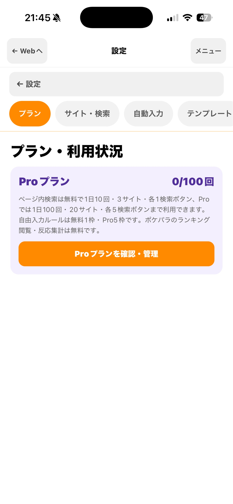

ホーム ／ 料金
Plans
まずは無料で。
必要になったらProへ。
LikeAssistは無料で始められます。検索回数やサイトプロファイル数などの上限を超えて使いたくなったら、Proへの切り替えをご検討ください。

実際のアプリ画面・プラン状態
Compare
無料 / Pro 比較表
| 項目 | 無料 | LikeAssist Pro |
|---|---|---|
| ページ内検索 | 1日10回 | 1日100回 |
| サイトプロファイル | 3件 | 20件 |
| 各サイトの検索ボタン | 1件 | 5件 |
| Webタブ | 3個 | 5個 |
| 自由入力ルール | 1枠 | 合計5枠 |
| 基本情報の入力補助 | 利用可 | |
| テンプレート | 利用可 | |
| プロファイルの保存・読み込み | 利用可（各プランの登録上限内） | |
| 価格 | ¥0 | 月額 ¥900（自動更新） |
商品ID：jp.likeassist.pro.monthly。決済はAppleのアプリ内購入です。価格表示は購入時のストア商品情報をご確認ください。
Good to know
数え方・解約時の扱い
検索回数はどう数えますか？
複数の検索候補は1周で1検索として数えます。候補が0件の場合はカウントしません。
Webタブはどう使いますか？
URL欄の下にある「＋」で追加し、タイトル横の「×」で閉じます。Webページ内のリンクを長押しすると、新しいタブで開けます。無料は3個、Proは5個までです。安定性を優先し、切り替え時はURLを開き直すため、入力途中の内容やスクロール位置は保持されない場合があります。
Proを解約すると設定は消えますか？
追加設定の内容は保存されます。無料枠を超える部分は利用が制限され、再度Proにすると利用を再開できます。自由入力ルールは、無料で使用する1枠を選べます。
複数のサイトを無料で使えますか？
無料プランでもサイトプロファイルを3件まで登録できます。利用するサイトに合わせて設定できます。
Related
あわせて見られています
価格・仕様は変更される場合があります。最新情報は購入時のApp Store表示をご確認ください。